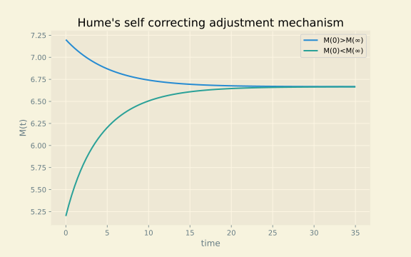
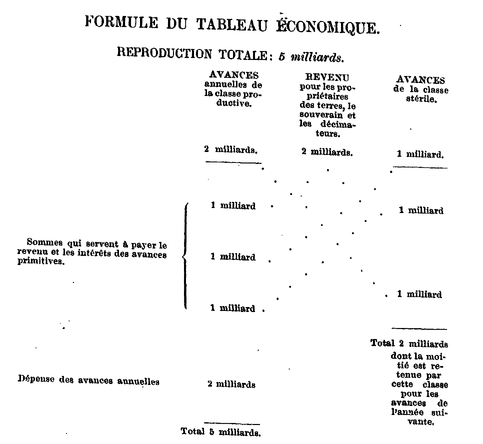

<!doctype html>
<html lang="en">

	<head>
		<meta charset="utf-8">

		<title>reveal.js - ClassHT 1</title>

		<link rel="stylesheet" href="plugin/reveal.css">
		<link rel="stylesheet" href="plugin/beige.css" id="theme">
        <link rel="stylesheet" href="plugin/monokai.css">
        <link rel="stylesheet" href="plugin/title-footer.css">
       
	</head>

	<body>

		<div class="reveal">

			<div class="slides">


                <!-- Slides are separated by three dashes (quick 'n dirty regular expression) -->
                <section data-markdown data-separator="\n---\n" data-separator-vertical="^\n--\n$">
                    <script type="text/template">
                        <!-- .slide: style="text-align: left;" -->
                        # History of Economic Analysis
                        
                        ### Francesco Franco - Nova SBE

                        ---
                        <!-- .slide: style="text-align: left;" -->
                        ### Introduction

                        - Today History of Economic Analysis (HEA) is not a very popular discipline in Economics departments.

                        - The view of economics as a  cumulative scientific process implies that the present is "the latest and best final thing".

                        - So my first question to you would be "Why are you here?" Why should we study HEA?

                            - the first answer "it is very interesting", is obviously subjective.

                            - a different answer is that Economics is such an important force in shaping Western civilization that it deserves a broad and historical analysis.
                    
                        ---

                    

                        <!-- .slide: style="text-align: left;" -->

                        ### Introduction

                       
                        > Well, why do we study the history of any science? [...] First, [...] Unless that recent treatise itself presents a minimum of historical aspects,
                         no amount of correctness, originality, rigor, or elegance will **prevent a sense of lacking direction and meaning from spreading among the students** or at least the majority of students.[...] 
                         Second, our minds are apt to derive **new inspiration** from the study of the history of science. [...]
                         Third, the highest claim that can be made for the history of any science or of science in general is that it teaches us much
                         about **the ways of the human mind**.  -- J.A. Schumpeter

                        *Direction and meaning*: think about starting a micro course by maximizing utility. It can appear as a strange exercise at first.
                        Yes you can go through very advanced course that would formally start from axioms on preferences, 
                        and although that would be at least a partial answer to the question why do we use a utility function, an historical approach can convey the sense of direction Schumpeter writes about.
                        
                        *New inspiration* is certainly a possibility.
                        
                        *Primary sources*  versus secondary sources.
                        ---

                        <!-- .slide: style="text-align: left;" -->

                        ### Introduction

                        > By History of Economic Analysis I mean the **history of the intellectual efforts** that men have made in order **to understand
                        economic phenomena** or, which comes to the same thing, the history of the analytic or **scientific aspects of economic thought**. -- J.A. Schumpeter

                        *Intellectual efforts* and methods are
                         - deductive:  first philosophy and then mathematics
                         - inductive:  first empirical observations and then statistical analysis

                    
                       
                        ---

                        <!-- .slide: style="text-align: left;" -->
                        ### Course content
                        #### Class organization

                        - short course: 12 classes of 80 min.

                        - Required material: 
                           -  notes (**)
                           -  original extract of papers identified in slides (*)
                           -  One book (**): Sandmo Agnar. Economics Evolving: a history of economic thought. Princeton Unversity press 2011.

                        - 3 homeworks: a quiz with 10 questions based on the notes and then a theoretical question based on the model presented for each topic. 40% of grade.
                          
                        - final exam: 60% of grade, essay (out of 3) of one topic, no books.

                        ---

                        
                        <!-- .slide: style="text-align: left;" -->
                        ### Course content
                        #### Languages we will use

                        - Economics is a fairly recent social science. The official birth date is commonly agreed to be the publication
                        of the Wealth of Nations by Adam Smith. Of course economics issues had been confronted well before.
                        
                        - The initial language used to analyze economic issues was writing. Writing intended in a broad sense
                        including for example logic and empirical observation. 

                        - Following the trend of the scientific revolution (Cournot already in 1838), mathematics slowly but surely
                        complemented plain writing as a language to analyze economic issues.

                        - Many subranches of mathematics, algebra, analysis (calculus), statistics, etc have been cumulatively used
                        in economics.

                        - New fields like econometrics have been created to analyze economic data.

                        - Element of Psychology and many other sciences are also used in certain fields.                        
                            
                        
                        ---

                        <!-- .slide: style="text-align: left;" -->

                        ### Course content
                        #### Method

                       
                        -  The method we follow:
                            - **text extracts** of important scholars writings (à la Heilbroner):  it is not until the 50's and 60's that Economics was
                                presented mostly using mathematical language. Although in the 20's mathematically oriented papers are already present, and of course Cournot did it in 1838.

                            - simplified maping of the writing into **mathematical models** (à la Samuelson): we loose complexity and sometimes depth of the writings content to gain
                                precision in the simpler idea.

                        - Good (Unique?) opportunity to read at least partially books that have made history and to solve models that have inspired generations of subsequent models. 
                        - An important disclaimer is that this course presents the history of tought in the Western World.

                        ---

                        <!-- .slide: style="text-align: left;" -->
                        ## Economics Tree I - The age of Political Economy

                        <center></center>
                       
                        ---

                

                        <!-- .slide: style="text-align: left;" -->
                        ## Economics Tree II - The age of Economics

                        <center></center>
                       
                        ---

                        <!-- .slide: style="text-align: left;" -->
                        ## Economics Tree III - The age of Fragmentation
                        <center></center>
                        
                        ---

                        

                        <!-- .slide: style="text-align: left;" -->
                        ## ETHICS

                        The two main economic questions that we identify in the Ethics period are:

                            1. what determine (a fair) price for a good in an exchange?
                            2. What is the correct level of the interest rate on a loan?

                        ---
                        
                        <!-- .slide: style="text-align: left;" -->
                         ### Aristotle 350 BC
                        
                         
                        Aristotle defines *oikonomikos*, the management of the household as having two components. The first relates to the role of the husband
                         (there is very little space for women in Ancient Greece beyond royalty) in managing the household and acquire private property,
                          which is composed of instruments, think of capital, and slaves, think of labor. This is a natural (wealth-getting) *ktetike*, the art of becoming rich by producing goods and services.
                        
                        Politics Book I-III, Aristotle
                        
                        > Seeing then that the state is made up of households, before speaking of
                         the state we must speak of the **management of the household**.
                         The parts of household management correspond to the persons who compose
                         the household, and a complete household consists of slaves and freemen.
                         Now we should begin by examining everything in its fewest possible elements;
                         and the first and fewest possible parts of a family are master and slave, husband and wife,
                         father and children.
                         We have therefore to consider what each of these three relations is and ought to be:
                         I mean the relation of master and servant, the marriage relation ,
                         and thirdly, the procreative relation. And there is another element
                         of a household, the so-called **art of getting wealth**, which, according to some,
                         is identical with household management, according to others, a principal part of it;
                         the nature of this art will also have to be considered by us.

                        Two notable aspects that interest us of the definition of household management which in greek is *oikonomikos*

                        1. Management of Slaves - Wife - Children 

                        2. But an important element is the "art" of achieving prosperity for the household.  Therefore, we must consider and understand this "art" in our intellectual speculations.
                        
                        ---

                        <!-- .slide: style="text-align: left;" -->

                        #### Property and Labor
                        
                        Politics Book I-IV, Aristotle

                        > Property is a part of the household, and **the art of acquiring property is a part of
                         the art of managing the household**; for no man can live well, or indeed live at all,
                         unless he be provided with necessaries. And as in the arts which have a definite
                         sphere the workers must have their own proper instruments for the accomplishment
                         of their work, so it is in the management of a household. Now instruments are of
                         various sorts; some are living, others lifeless; in the rudder, the pilot
                         of a ship has a lifeless, in the look-out man, a living instrument;
                         for in the arts the servant is a kind of instrument.
                         Thus, too, a possession is an instrument for maintaining life.
                         And so, in the arrangement of the family, **a slave is a living possession**,
                         and property a number of such instruments;
                         and the servant is himself an instrument which takes precedence of all other instruments.

                        Private property is central to oikonomikos is composed of

                        1. Instruments (capital)

                        2. Slaves (Labor)

                        ---

                        <!-- .slide: style="text-align: left;" -->

                        #### Accumulation of wealth

                        The second relates to the accumulation of wealth tipycally achieved through commerce or finance. This is an unnatural (wealth-getting) *krematistike*,
                        art of becoming rich from trade and usury, which is *most hated*.
                        


                        Politics Book I-X, Aristotle

                        > **There are two sorts of wealth-getting, as I have said;
                         one is a part of household management, the other is retail trade**:
                         the former necessary and honorable, while that which consists in exchange
                         is justly censured; for it is unnatural, and a mode by which men gain from one another.
                         **The most hated sort**, and with the greatest reason, is **usury**, which makes a gain out of money itself,
                         and not from the natural object of it. For money was intended to be used in exchange,
                         but not to increase at interest. And this term interest, which means the birth of money from money,
                         is applied to the breeding of money because the offspring resembles the parent.
                         Wherefore of an modes of getting wealth this is the most unnatural.

                         This is a very negative view of trade and financial activities, which of course existed in Antiquity.
                         Aristotle does not like the idea that in a trade there might be a surplus, namely one of the party that gains more. Regarding interest rates on a loan, it identifies it as incestuous. 

                        ---

                        <!-- .slide: style="text-align: left;" -->

                        #### Prices

                        Aristotle also  believed there should be justice in exchange. Drawing on the commutative principle, Aristotle argued for a "just price" - that you should give in value what you receive in value. he notably distinguishes between the use value: ability to satisfy a specific need
                        and exchange value: quantitative relationship in which one good is exchanged for another
                        He also recognized that money was just a convention, neither good nor bad in itself. 

                        The Nichomachean Ethics, Book V-5, Aristotle 

                        > For it is not two doctors that associate for exchange, but a doctor and a farmer,
                         or in general people who are different and unequal; but these must be equated.
                         This is why **all things that are exchanged must be somehow comparable**.
                         It is for this end that **money** has been introduced, and it becomes in a sense an **intermediate**;
                         for it **measures** all things, and therefore the excess and the defect-how many shoes
                         are equal to a house or to a given amount of food.
                         The number of shoes exchanged for a house (or for a given amount of food) must therefore correspond
                         to the ratio of builder to shoemaker.
                         For if this be not so, there will be no exchange and no intercourse.[...] All goods must therefore be measured by some
                         one thing, as we said before. Now **this unit is in truth demand**, which
                         holds all things together (for if men did not need one another's goods
                         at all, or did not need them equally, there would be either no exchange
                         or not the same exchange); but **money has become by convention a sort
                         of representative of demand**.

                        Distinction between:

                        1. Use value: ability to satisfy a specific need

                        2. Money was just a convention, neither good nor bad in itself.

                        ---

                        <!-- .slide: style="text-align: left;" -->
                        ### Interlude
                        These negative ethical views on an exchange, if the exchange is not executed at a fair price, and on interest rates, will have long-lasting consequences.
                        For centuries scholars will try to explain how prices are determined, if these prices are fair, and why it is just to charge an interest rate.
                        Not much progress for 1500 years...While western (Latin) Europe descended into the Dark Ages in the 5th-6th C., 
                        the doctrines of the classical philosophy were resurrected by Islamic scholars.
                        It was through them that the 13th and 14th Century Scholastic theologians recovered classical Greek works,
                        and brought their thinking (notably Aristotle) back into the mainstream of European intellectual life. 
 
                        ---

                        <!-- .slide: style="text-align: left;" -->


                        ### Thomas Aquinas 1224-1274
                        #### Price

                        Summa Theologica - By Sins Committed in Buying and Selling  Q77, T. Aquinas
                        
                        > We must now consider those sins which relate to voluntary commutations. First, we shall consider cheating,
                         which is committed in buying and selling: secondly, we shall consider usury, which occurs in loans.
                         In connection with the other voluntary commutations no special kind of sin is to be found distinct from rapine and theft.
                         Under the first head there are four points of inquiry: (1) Of unjust sales as regards the **price** ;
                         namely, whether it is lawful to sell a thing for more than its worth? (2) Of unjust sales on the part of the thing sold;
                         (3) Whether the seller is bound to reveal a fault in the thing sold?
                         (4) Whether it is lawful in trading to sell a thing at a higher **price** than was paid for it?

                         

                        ---

                        <!-- .slide: style="text-align: left;" -->

                        #### Usury
                        
                        Summa Theologica - By Sins Committed in Loans Q78, T. Aquinas
                        
                        > We must now consider the sin of **usury**, which is committed in **loans**: 
                          and under this head there are four points of inquiry:
                         (1) Whether it is a sin to take money as a price for money lent, which is to receive usury?
                         (2) Whether it is lawful to lend money for any other kind of consideration, by way of payment for the loan?
                         (3) Whether a man is bound to restore just gains derived from money taken in usury?
                         (4) Whether it is lawful to borrow money under a condition of usury?
                         [...]
                         I answer that, **To take usury for money lent is unjust in itself**,
                        because this is to sell what does not exist, and this evidently leads to inequality which is contrary to justice. 
                        

                        These views echo Aristotle and had implications for the development of trade. And again, lending for interest was seen as an aberration, again having long-lasting implications for the development of finance. 

                        - Money was seen as a fungible good and could not receive a price for its use when loaned.
                        
                        - Some suggested that it was remuneration of time but this was refuted by the observation that time
                         was a common good. 
                        
                        - There were "tricks" to circumvent it, for example *damnum emergens* -> default probability commanded an interest. Other "tricks" existed.

                        ---

                        <!-- .slide: style="text-align: left;" -->

                        ### Scientific revolution - Italian preludio

                        A sharp turning away from the medieval tradition that put God and the after-life at the center of everything.
                        This new vision is revealed with flamboyant confidence by Pico della Mirandola a Florentine thinker that wrote

                        On the Dignity of Man (1480)
                        > We (God) have made you a creature neither of heaven nor of earth, neither mortal nor immortal, in order that you may,
                        as the free and proud shaper of your own being, fashion yourself in the form you may prefer.
                        It will be in your power to descend to the lower, brutish forms of life; you will be able, through your own decision,
                        to rise again to the superior orders whose life is divine. (the man answers) Oh unsurpassed generosity of God the Father,
                        oh wondrous and unsurpassable felicity of man, to whom it is granted to have what he chooses, to be what he wills to be!

                        Another Florentine, Machiavelli moved further in the same direction for him:
                        
                        The Prince (1532)
                        > ...because fortune is a woman, and if you wish to keep her under it is necessary to beat and ill-use her;
                        and it is seen that she allows herself to be mastered by the adventurous rather than by those who go to work more coldly.

                        ---

                        <!-- .slide: style="text-align: left;" -->

                        ### Scientific revolution - European Symphony 


                        - Francis Bacon, influenced by Machiavelli urged human beings to employ their reason to force nature to give up its secrets.
                        To master nature in order to improves man's material life. He assumes that such a course will lead to progress and the general improvement
                        of human condition. It was that sort of thinking that laid at the heart of the scientific revolution and remains
                        the faith upon which modern science and technology rests. Copernicus, Keplere, Galileo, Leibnitz, Descartes, Newton.

                        - Hobbs and Locke, applied a similar novelty and modernity to the sphere of politics. They based their understanding on the common passions of man for comfortable
                         self-preservation and discovering something they called natural rights that belonged to a man either as part of nature or as the gift of a benevolent and a reasonable god.

                    
                        - **In that environment of emanicipation where the speculative method applies and rational deductive procedure is applied to an object of study,
                        some wanted to emancipate economics from the individual sphere and project it also to public activity.**

                        ---

                        <!-- .slide: style="text-align: left;" -->

                        ### From Moral to Reason or from Oikonimokos to Political Economy 

                        <center></center>

                    
                    
                        ---

                        

                        <!-- .slide: style="text-align: left;" -->

                        ## Political Economy

                        While the two economic questions raised during the Ethics period remained part of these discussions, new "macro" questions were raised:

                        1. how to increase a nation wealth and/or the level of activity (sometimes confused to be the same)?
                        2. What are the effects of government interventions on the economy?
                        3. What is the effect of the stock of money on the level of activity and on the price level?
                        4. What are the effects of international trade?
                        5. How does the flow between "sectors" works? 
                                                
                    
                    
                        ---


                        <!-- .slide: style="text-align: left;" -->
                        
                        ### Mercantilism - Thomas Mun 1571-1641
                        #### Trade
                        
                        **Gold is identified as the primary form of wealth (Bullionism) and the primary policy prescription is to run an external surplus**.
                        You could run deficits with countries that were providing with raw materials if it permited to run surpluses with others.
                        
                        England Treasure by Forraign Trade - Chapter II, The means to enrich this Kingdom, and to encrease our Treasure, T. Mun

                        > Although a Kingdom may be enriched by gifts received, or by purchase taken from some other Nations,
                        yet these things are uncertain and of small consideration when they happen.
                        **The ordinary means therefore to encrease our wealth and treasure is by Forraign Trade**, 
                        wherein **we must ever observe this rule: to sell more to strangers yearly than we consume of theirs in value**.
                        For suppose that when this Kingdom is plentifully served with the Cloth, Lead, Tinn, Iron, Fish and other native commodities,
                        we doe yearly export the overplus to forraign Countries to the value of twenty two hundred thousand pounds;
                        by which means we are enabled beyond the Seas to buy and bring in forraign wares for our use and Consumptions,
                        to the value of twenty hundred thousand pounds; By this order duly kept in our trading, we may rest assured that
                        the Kingdom shall be enriched yearly two hundred thousand pounds, which must be brought to us in so much Treasure;
                        because that part of our stock which is not returned to us in wares must necessarily be brought home in treasure.

                        - This view favors the merchants, hence the name mercantilism.
                        - It prescribes protectionism.
                        - Lead to the creation of great national companies such as the British East india Company in 1600. 
                        
                        ---

                        <!-- .slide: style="text-align: left;" -->

                        ### Toward the Classics - Richard Cantillon 1680-1734
                        #### Prices

                        **Towards the end of 17th century the idea that state intervention was harmful to the economic development started to spread.**
                        Simultaneously prices were seen as determined by production more than demand factors.
                        
                        Essay on the Nature of Commerce Part I, Chapter X, R. Cantillon

                        > If **two Acres of Land are of equal goodness**,
                         one will feed as many Sheep and produce as much Wool as the other, **supposing the Labour to be the same**,
                         and the Wool produced by one Acre will sell at the **same price** as that produced by the other.
                         If the Wool of the one acre is made into a suit of coarse Cloth and the Wool of the other into a suit of fine Cloth,
                         as the latter will require **more work and dearer workmanship** it will be sometimes **ten times dearer**,
                         though both contain the same quantity and quality of Wool. [...] 
                         The price of a pitcher of Seine Water is nothing, because there is an immense supply which does not dry up;
                         but in the Streets of Paris people give a sou for it—the price or measure of the Labour of the Water-carrier.
                         By these examples and inductions it will, I think, be understood that **the Price or intrinsic value of a thing
                         is the measure of the quantity of Land and Labour entering into its production,
                         having regard to the fertility or produce of the Land and to the quality of the Labour**.
                         **But it often happens that many things which have actually this intrinsic value are not sold on the Market according to that value:
                         that will depend on the Humours and Fancies of men and on their consumption**.

                        - Intrinsic value is price as value of production

                        - Market price can differ depending on demand factors
    
                        
                        
                        ---

                        <!-- .slide: style="text-align: left;" -->

                        #### Money (Quantity Theory)
                        
                        Essay on the Nature of Commerce Part II, Chapter VI, R. Cantillon
                        
                        > If mines of gold or silver be found in a State and considerable quantities of minerals drawn from them,
                         the Proprietor of these Mines, the Undertakers, and all those who work there, will not fail to increase their expenses in proportion
                         to the wealth and profit they make: they will have over and above what they need to spend.
                         **All this money, whether lent or spent, will enter into circulation and will not fail to raise the price of products and merchandise
                         in all the channels of circulation which it enters. Increased money will bring about increased expenditure and this will cause an increase
                         in Market prices** in the highest years of exchange and gradually in the lowest.[...] 
                         **Mr. Locke lay it down as a fundamental maxim that the quantity of produce and merchandise in proportion to the quantity
                         of money serves as the regulator of Market price** [...]
                         If the increase in actual money comes from Mines or gold or silver in the State the Owner of these Mines,
                         the Adventurers, the Smelters, Refiners, and all other workers will increase their expenses in proportion to their gains.
                         They will consume in their households more Meat, Wine, or Beer than before, will accustom themselves to wear better cloaths,
                         finer linen, to have better furnished Houses and other choicer commodities.
                         They will consequently give employment to several Mechanicks who had not so much to do before and who
                         for the same reason will increase their expenses: all this increase in Meat, Wine, Wool, etc.[...] 
                         diminishes of necessity the share of the other inhabitants of the State who do not participate at first in the wealth of the Mines in question.
                         The altercations of the market, or the demand for Meat, Wine, Wool, etc., being more intense than usual, will not fail to raise their prices.
                         These high prices will determine the Farmers to employ more land to produce them in another year:
                         these same Farmers will profit by this rise of prices and will increase the expenditure of their Families like the others.

                        `$$M*\gamma = P*Q$$`

                        where M is money, $\gamma$ velocity, P price level and Q output. Intellectual debates on what adjusts and when.

                         An increase in Money Supply will ultimately results in an increase in Prices, but will also increase activity in the short run.
                        
                        ---

                        <!-- .slide: style="text-align: left;" -->

                        ### Toward the Classics - David Hume 1711-1776
                        #### The Trade Price-specie adjustment
                        
                        Hume in Political Discourses lay down the price-specie adjustment mechanism to the balance of trade.

                        Political Essays - Of the balance of trade, D. Hume
                        
                        > IT is very usual, in nations ignorant of the nature of commerce, to prohibit the exportation of commodities, and to preserve among
                        themselves whatever they think valuable and useful[...]It is well knwon to the teamed, that the ancient laws of 
                        ATHENS rendered the exportation of figs criminal; that being supposed a species of fruit so excellent in ATTICA,
                        that the ATHENIANS deemed it too delicious for the palate of any foreigner[...] 
                        The same jealous fear, with regard to money, has also prevailed among several nations; 
                        and it required both reason and experience to convince any people, that these prohibitions serve to no other purpose
                        than to raise the exchange against them, and produce a still greater exportation....
                        But there still prevails, even in nations well acquainted with commerce, a strong jealousy with regard to the balance of trade, and a fear,
                        that all their gold and silver may be leaving them...**Suppose four-fifths of all the money in BRITAIN
                        to be annihilated in one night**, and the nation reduced to the same condition, with regard to specie, as in the reigns of the
                        HARRYS and EDWARDS, what would be the consequence? **Must not the price of all labour and commodities sink in proportion,
                        and every thing be sold as cheap as they were in those ages?** **What nation could then dispute with us in any foreign market,
                        or pretend to navigate or to sell manufactures at the same price, which to us would afford sufficient profit?** In how little time,
                        therefore, must this bring back the money which we had lost, and raise us to the level of all the neighbouring nations?
                        Where, after we have arrived, we immediately lose the advantage of the cheapness of labour and commodities; 
                        and the farther flowing in of money is stopped by our fulness and repletion.

                        It is the re-equilibrating mechanism: a surplus generates an inflow of gold and therefore an increase in prices and the opposite in the deficit country.
                        The consequent change in competitiveness would rebalance trade. The implications are free trade. 
                        ---

                        <!-- .slide: style="text-align: left;" -->

                        #### The Trade Price-specie adjustment

                        ##### From deductive reasoning to a mathematical model (A Corrected Version of Hume’s Equilibrating Mechanisms for International Trade, Paul Samuelson)

                        - Let $P$ stand for gold price(s) at home, $P^{*}$ for price(s) abroad

                        - $M^{*}$ stands for foreign (gold) money supply

                        - $M$ for domestic gold supply

                        - $Q$ and $Q^{*}$ for the total outputs at home and abroad

                        - Ignoring capital movements, let $B$ be the gold value of the balance of trade – the surplus of exports over imports if positive, or deficit if negative.
                        
                        ---


                        <!-- .slide: style="text-align: left;" -->

                        #### Price-specie adjustment

                        ##### Model parts

                        `$$B =f\left(\frac{P}{P^{*}}\right)\ \ with\ f'< 0$$`

                        represents the idea that the trade balance improves if the domesctic economy is more competitive, namely goods costs less than abroad.

                        `$$ PQ =\gamma M$$`

                        is the famous quantity theory of Money.
                        The central question (see Hume and Cantillon quotes above) is when $M$ changes what adjusts (and when)? $P$ or $Q$ or $\gamma$?
                        For Hume it is $P$.

                        `$$B =\dot{M}=-\dot{M}^{*}$$`

                        represents the outflow of money (gold) to pay the deficit, or the inflow that corresponds to a surplus.

                        `$$M+M^{*} =\bar{M}$$`

                        represents the equilibrium in the total amount of Gold in the system (World)
                                                                         
                        ---

                        <!-- .slide: style="text-align: left;" -->

                        #### Price-specie adjustment

                        ##### Model equilibium

                        `$$\begin{aligned}
                         B &=f\left(\frac{P}{P^{*}}\right)\ \ with\ f'< 0 \\
                         PQ &=\gamma M \\
                         P^{*}Q^{*} &=\gamma M^{*} \\
                         B &=\dot{M}=-\dot{M}^{*} \\
                         M+M^{*} &=\bar{M}\end{aligned}$$`

                         Reasoning of Hume according to the system: if $M$ decreases suddenly (he wants to describe the outflow of gold)
                         then $P$ will decrease if $Q$ is maintained and $B$ will reverse. Actually solve the system and get:

                        `$$\dot{M}=f\left(\frac{MQ^{*}}{\left(\bar{M}-M\right)Q}\right)$$`

                        ---

                        <!-- .slide: style="text-align: left;" -->

                        #### Price-specie adjustment

                        ##### Model steady state 

                        In Stationary - Steady State (think of the Long Run when the adjustment is terminated):
                        
                        $$B=f(1)=0$$
                        
                        `$$f\left(\frac{MQ^{*}}{\left(\bar{M}-M\right)Q}\right)=0$$`

                        Invert $f$ to obtain a solution for $M$:

                        `$$M=\frac{Q}{Q^{*}+Q}\bar{M}$$`

                        which shows that in the Long Run the quantity adjusts towards a constant proportion given
                        by the production level (taken as given).


                        ---

                        <!-- .slide: style="text-align: left;" -->

                        #### Price-specie adjustment

                        ##### Model example
                        
                        Assume that `$B=0=f\left(1\right)$` and for example

                        `$$f(P/P^*) = (P/P^*)^{(\alpha-1)}- 1$$` where $\alpha< 1$
                        
                        "As Schumpeter used to put it, we can applaud Hume’s performance in specifying a self-correcting mechanism that
                        impressed people for two hundred years." P.A. Samuelson

                        <center></center>
                        
                        ---

                        <!-- .slide: style="text-align: left;" -->

                        #### Price-specie adjustment considering short run

                        #### Money
                        
                        Hume Political Essays - Of Money, D. Hume

                        > Accordingly we find, that, in every kingdom, into which money begins to flow in greater abundance than formerly,
                         every thing takes a new face; labour and industry gain life; the merchant becomes more enterprising,
                         the manufacturer more diligent and skilful, and even the farmer follows his plough with greater acrity and attention. 
                         This is not easily to be accounted for, if we consider only the influence which a greater abundance of coin has in the kingdom itself,
                         by heightening the price of commodities, and obliging every one to pay a greater number of these little yellow or white pieces
                         for every thing he purchases. And as to foreign trade, it appears, that great plenty of money is rather disadvantageous,
                         by raising the price of every kind of labour. To account, then, for this phenomenon, we must consider, that,
                         though the high price of commodities be a necessary consequence of the encrease of gold and silver, yet it follows
                         not immediately upon that encrease; but **some time is required before the money circulates through the whole state,
                         and makes its effect be felt on all ranks of people**. At first, no alteration is perceived; by degrees the price rises, 
                         first of one commodity, then of another; till the whole at last reaches a just proportion with the new quantity of specie
                         which is in the kingdom. **In my opinion, it is only in this interval or intermediate situation, between the acquisition of
                         money and rise of prices, that the encreasing quantity of gold and silver is favourable to industry**.

                        - So in the chapter on Money, Hume recognizes an effect on activity in the Short Run that it did not consider in the price-specie adjustment.
                        - He also assume that the Quantity Theory of Money linked every price in a region to the money in that region alone (Samuelson model)
                      
                        
                        ---

                       <!-- .slide: style="text-align: left;" -->

                       ### Toward the Classics - Physiocratic school - Francois Quesnay 1694-1774

                       This movement might be the first "true" school, with Francois Quesnay as the central figure. The main contributions are:

                       - the notions of productive and unproductive labour, by means of which the real source of wealth was found in the net product obtained by applying labour to land;

                       - the idea of interdependence among the various productive sectors and the related idea of macroeconomic equilibrium;

                       - the representation of the economic exchanges as a circular flow of money and goods among the various economic sectors;

                       - the displacement of scientific interest from the stock of wealth to the flow of net product.

                       
                        
                        ---

                        <!-- .slide: style="text-align: left;" -->
                        #### Tableau Economique - Input-Output System

                        <center></center>

                        - The *productive* class pays two milliard in rent (produit net) to the *distributive* class
                        and one milliard to the *sterile* class to buy manufactured articles, and spends two milliard within the
                        agricultural sector to buy raw materials, wage goods, and means of production.

                        - The distributive class will spend its income in the following way: one milliard to the sterile class
                        and the other one milliard to the productive class to buy, respectively,
                        manufactured goods and agricultural products.

                        - The sterile class, which has received two milliard,
                        half from the distributive class and half from the farmers,
                        will spend it all on the productive class to buy its inputs and necessary consumer goods.

                        - The three milliard that the productive class has spent outside the agricultural sector will come back to it;
                        so that the cycle can begin again.

                        He viewed this system as a natural order and therefore laissez-faire would be best. A second implication was to simplify tax systemand create a unique tax on the produit net. 

                        ---

                        <!-- .slide: style="text-align: left;" -->
                        #### Tableau Economique - Input-Output System in the original book 1758

                        <center></center>

                        ---

                        
                        
                        <!-- .slide: style="text-align: left;" -->
                        ### References

                        Beyond all books cited in the slides:
                       
                        - Heilbroner, R. L. (1996). Teachings from the worldly philosophy. New York, W.W. Norton.
                        
                        - Screpanti, Ernesto & Zamagni, Stefano, 1995. "An Outline of the History of Economic Thought," OUP Catalogue, Oxford University Press

                        - Sandmo, Agnar.  (2011).  Economics evolving : a history of economic thought.  Princeton, N.J :  Princeton University Press.

                        - P.A. Samuelson “A Corrected Version of Hume’s Equilibrating Mechanism for International Trade.” In Flexible Exchange Rates and the Balance of Payments: Essays in Memory of Egon Sohmen, John S. Chipman and Charles P. Kindleberger, 141–158. Amsterdam: North- Holland, 1980.
                        

                    </script>
                </section>

            </div>
		</div>

		<script src="plugin/reveal.js"></script>
        <script src="plugin/markdown.js"></script>
        <script src="plugin/highlight.js"></script>
        <script src="plugin/notes.js"></script>
        <script src="plugin/plugin.js"></script>
        <script src="plugin/math.js"></script>
        <script src="plugin/plugin.js"></script>
        <script src="plugin/menu.js"></script>
        <script src="plugin/pdfexport.js"></script>
		<script>

			Reveal.initialize({
				controls: true,
				progress: true,
				history: true,
                center: true,
                touch: true,

                menu: {
                    // Specifies which side of the presentation the menu will
                    // be shown. Use 'left' or 'right'.
                    side: 'left',

                    // Specifies the width of the menu.
                    // Can be one of the following:
                    // 'normal', 'wide', 'third', 'half', 'full', or
                    // any valid css length value
                    width: 'normal',

                    // Add slide numbers to the titles in the slide list.
                    // Use 'true' or format string (same as reveal.js slide numbers)
                    numbers: true,

                    // Specifies which slide elements will be used for generating
                    // the slide titles in the menu. The default selects the first
                    // heading element found in the slide, but you can specify any
                    // valid css selector and the text from the first matching
                    // element will be used.
                    // Note: that a section data-menu-title attribute or an element
                    // with a menu-title class will take precedence over this option
                    titleSelector: 'h1, h2, h3, h4, h5, h6',

                    // If slides do not have a matching title, attempt to use the
                    // start of the text content as the title instead
                    useTextContentForMissingTitles: false,

                    // Hide slides from the menu that do not have a title.
                    // Set to 'true' to only list slides with titles.
                    hideMissingTitles: false,

                    // Adds markers to the slide titles to indicate the
                    // progress through the presentation. Set to 'false'
                    // to hide the markers.
                    markers: true,

                    // Specify custom panels to be included in the menu, by
                    // providing an array of objects with 'title', 'icon'
                    // properties, and either a 'src' or 'content' property.
                    custom: false,

                    // Specifies the themes that will be available in the themes
                    // menu panel. Set to 'true' to show the themes menu panel
                    // with the default themes list. Alternatively, provide an
                    // array to specify the themes to make available in the
                    // themes menu panel, for example...
                    //
                    // [
                    //     { name: 'Black', theme: 'dist/theme/black.css' },
                    //     { name: 'White', theme: 'dist/theme/white.css' },
                    //     { name: 'League', theme: 'dist/theme/league.css' },
                    //     {
                    //       name: 'Dark',
                    //       theme: 'lib/reveal.js/dist/theme/black.css',
                    //       highlightTheme: 'lib/reveal.js/plugin/highlight/monokai.css'
                    //     },
                    //     {
                    //       name: 'Code: Zenburn',
                    //       highlightTheme: 'lib/reveal.js/plugin/highlight/zenburn.css'
                    //     }
                    // ]
                    //
                    // Note: specifying highlightTheme without a theme will
                    // change the code highlight theme while leaving the
                    // presentation theme unchanged.
                    themes: false,

                    // Specifies the path to the default theme files. If your
                    // presentation uses a different path to the standard reveal
                    // layout then you need to provide this option, but only
                    // when 'themes' is set to 'true'. If you provide your own
                    // list of themes or 'themes' is set to 'false' the
                    // 'themesPath' option is ignored.
                    themesPath: 'dist/theme/',

                    // Specifies if the transitions menu panel will be shown.
                    // Set to 'true' to show the transitions menu panel with
                    // the default transitions list. Alternatively, provide an
                    // array to specify the transitions to make available in
                    // the transitions panel, for example...
                    // ['None', 'Fade', 'Slide']
                    transitions: false,

                    // Adds a menu button to the slides to open the menu panel.
                    // Set to 'false' to hide the button.
                    openButton: true,

                    // If 'true' allows the slide number in the presentation to
                    // open the menu panel. The reveal.js slideNumber option must
                    // be displayed for this to take effect
                    openSlideNumber: false,

                    // If true allows the user to open and navigate the menu using
                    // the keyboard. Standard keyboard interaction with reveal
                    // will be disabled while the menu is open.
                    keyboard: true,

                    // Normally the menu will close on user actions such as
                    // selecting a menu item, or clicking the presentation area.
                    // If 'true', the sticky option will leave the menu open
                    // until it is explicitly closed, that is, using the close
                    // button or pressing the ESC or m key (when the keyboard
                    // interaction option is enabled).
                    sticky: false,

                    // If 'true' standard menu items will be automatically opened
                    // when navigating using the keyboard. Note: this only takes
                    // effect when both the 'keyboard' and 'sticky' options are enabled.
                    autoOpen: true,

                    // If 'true' the menu will not be created until it is explicitly
                    // requested by calling RevealMenu.init(). Note this will delay
                    // the creation of all menu panels, including custom panels, and
                    // the menu button.
                    delayInit: false,

                    // If 'true' the menu will be shown when the menu is initialised.
                    openOnInit: false,

                    // By default the menu will load it's own font-awesome library
                    // icons. If your presentation needs to load a different
                    // font-awesome library the 'loadIcons' option can be set to false
                    // and the menu will not attempt to load the font-awesome library.
                    loadIcons: true
                },

                dependencies:
                [
                    { src: 'plugin/title-footer.js', async: true, callback: function() { title_footer.initialize(); } }
                ],
                math: {
                    mathjax: 'https://cdn.jsdelivr.net/gh/mathjax/mathjax@2.7.8/MathJax.js',
                    config: 'TeX-AMS_HTML-full',
                    // pass other options into `MathJax.Hub.Config()`
                    TeX: { Macros: { RR: "{\\bf R}" } }
                    },
        
                chalkboard: {
                    boardmarkerWidth: 3,
                    chalkWidth: 2.5,
                    chalkEffect: 1,
                    src: null,
                    readOnly: undefined,
                    toggleChalkboardButton: { left: "90px", bottom: "30px", top: "auto", right: "auto" },
                    toggleNotesButton: { left: "60px", bottom: "30px", top: "auto", right: "auto" },
                    transition: 800,
                    theme: "whiteboard",
                    background: [ 'rgba(127,127,127,.1)' , path + 'img/whiteboard.png' ],
                    grid: { color: 'rgba(127,127,127,.1)', distance: 80, width: 0.01},
                    eraser: { src: path + 'img/sponge.png', radius: 20},
                    boardmarkers : [
                            { color: 'rgba(127,127,127,1)', cursor: 'url(' + path + 'img/boardmarker-black.png), auto'},
                            { color: 'rgba(30,144,255, 1)', cursor: 'url(' + path + 'img/boardmarker-blue.png), auto'},
                            { color: 'rgba(220,20,60,1)', cursor: 'url(' + path + 'img/boardmarker-red.png), auto'},
                            { color: 'rgba(50,205,50,1)', cursor: 'url(' + path + 'img/boardmarker-green.png), auto'},
                            { color: 'rgba(255,140,0,1)', cursor: 'url(' + path + 'img/boardmarker-orange.png), auto'},
                            { color: 'rgba(150,0,20150,1)', cursor: 'url(' + path + 'img/boardmarker-purple.png), auto'},
                            { color: 'rgba(255,220,0,1)', cursor: 'url(' + path + 'img/boardmarker-yellow.png), auto'}
                    ],
                    chalks: [
                            { color: 'rgba(255,255,255,0.5)', cursor: 'url(' + path + 'img/chalk-white.png), auto'},
                            { color: 'rgba(96, 154, 244, 0.5)', cursor: 'url(' + path + 'img/chalk-blue.png), auto'},
                            { color: 'rgba(237, 20, 28, 0.5)', cursor: 'url(' + path + 'img/chalk-red.png), auto'},
                            { color: 'rgba(20, 237, 28, 0.5)', cursor: 'url(' + path + 'img/chalk-green.png), auto'},
                            { color: 'rgba(220, 133, 41, 0.5)', cursor: 'url(' + path + 'img/chalk-orange.png), auto'},
                            { color: 'rgba(220,0,220,0.5)', cursor: 'url(' + path + 'img/chalk-purple.png), auto'},
                            { color: 'rgba(255,220,0,0.5)', cursor: 'url(' + path + 'img/chalk-yellow.png), auto'}
                    ]
                },
                

				plugins: [ RevealMarkdown, RevealHighlight, RevealNotes,RevealMath, RevealMenu, RevealChalkboard, PdfExport]
			});

		</script>

	</body>
</html>
